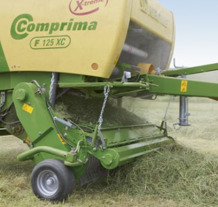

Немецкая компания KRONE заслуженно входит в число лучших производителей современной техники для сельскохозяйственных нужд. Одним из приоритетных направлений деятельности Bernard KRONE Holding SE & Co. KG (Шпелле, Німеччина) является производство сельскохозяйственной техники для заготовки кормов
Производственная программа техники KRONE включает дисковые косилки, ворошители, валкообразователи, самозагрузочные прицепы для подбора и транспортировки кормов, крупнопакующие тюковые и рулонные пресс-подборщики разных комплектаций, самоходные косилки Big M и кормоуборочные комбайны Big X. Более чем 100 лет компания создаёт технику, внедряя успешные решения для повышения пользы машин для клиентов за счёт увеличения их продуктивности, надёжности, комфорта и удобства эксплуатации.
Для скашивания зеленой массы KRONE предлагает самоходные машины и прицепные агрегаты к самоходной технике. Впервые представленная в 1996 году самоходная косилка-плющилка BiG M с продуктивностью до 20 га/ч с каждым годом набирает популярности в мире. Дисковые косилки представлены в сериях задненавесные, фронтальные, триплекс-комбинации и прицепные EasyCut. Уникальная технология EasyCut заключается в защите косилки SafeCut при помощи срезных штифтов, что сводит к минимуму необходимость технического обслуживания. Только EasyCut имеет сплошной сваренный вокруг косилочный брус, который не требует обслуживания весь срок эксплуатации. Передача силы от ВВП трактора осуществляется при помощи сверхнадёжных карданных и редукторных передач. Косилка может быть оснащена вальцевой плющилкой. Зубчастое сцепление профилированных вальцев осуществляет сжимание, трение и измельчение до высокой степени плющения скошенной травы. Функция плющения вальцами в первую очерель важна для заготовки ценных бобовых многолетних трав. Результатом работы косилок KRONE является быстрый срез стебля травы и подготовка массы к следующему этапу заготовки.
Прицепные косилки KRONE
прицепная дисковая косилка с плющилкой Krone Easy Cut 3210 CRi
Для подготовки к сбору скошенной зеленой массы KRONE предлагает валкователи, оборудовнные 1-6 роторами с возможностью укладки на сторону и по центру. Ротор Swadro благодаря удачной комбинации элементов привода, уникальных беговых дорожек DuraMax, центральной прицепной навеске, карданному приводу, «реактивному ефекту» KRONE, 3-осевому ходовому механизму обеспечивают качественную работу с тяжелой кормовой массой. Валкообразователи KRONE SWADRO предлагаются потребителю рабочей шириной захвата от 3,5 до 19 м.
Валкообразователи (грабли) KRONE
Валкователь прицепной двухроторный Krone Swadro 620 TS
Упаковочные агрегаты KRONE представлены серией рулонных пресс-подборщиков Comprima, Fortima, Bellima, Ultima и крупнопакующими пресс-подборщиками серии Big Pack. Рулонные пресс-подборщики производятся с константной или вариационной прессовальной камерой, оборудованы ременно- или цепчасто-планчатым транспортёром, с обвязкой рулона на выбор шпагатом, сеткой или плёнкой. Результатом работы этих агрегатов является равномерно сформированные, жесткие и стабильные рулоны высокой плотности, работа без остановки при формировании рулонов даже при подборе мелкой и пересушенной массы, минимальные потери от обтрушивания, снижение пылеобразования, незначительные потери топлива и отбор мощности агрегированной техники. Максимальная продуктивность при минимальных потребностях сервиса – это основные отличия рулонных пресс-подборщиков KRONE. В зависимости от потребностей и модели рулонные пресс-подборщики могут комбинироваться с обматывающим устройством, что позволяет на высоком технологичном уровне заготавливать и конрсервировать сеннаж.
Валкообразователи (грабли) KRONE

Рулонный пресс-подборщикComprima F 125 XC
Рулонный пресс-подборщик Comprima F 155 XC
Тюковый пресс-подборщик Big Pack
Кормоуборочные комбайны KRONE
Кормоуборочный комбайн BigX
Кормоуборочный комбайн BigX - современный комбайн с использованием нвейших современных передовых технологий заготовки сеннажа и силоса с мощностью двигателя от 600 до 1100 л.с. Кроме сверхвысокой продуктивности и экономии топлива – это комбайн с точной длиной резки, которую можно регулировать по необходимости. Результат – на треть более высокая кормовая ценность заготовленного силоса в сравнении с конкурентами на рынке.